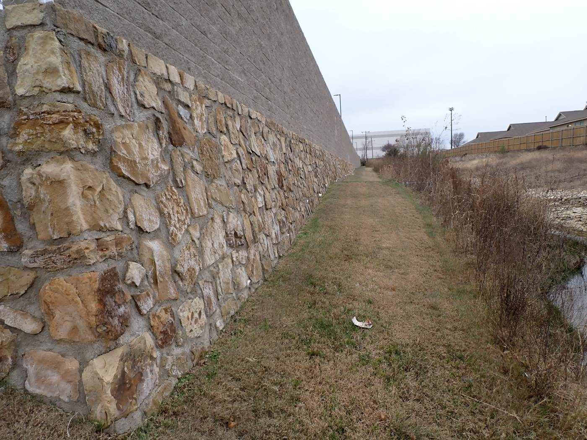
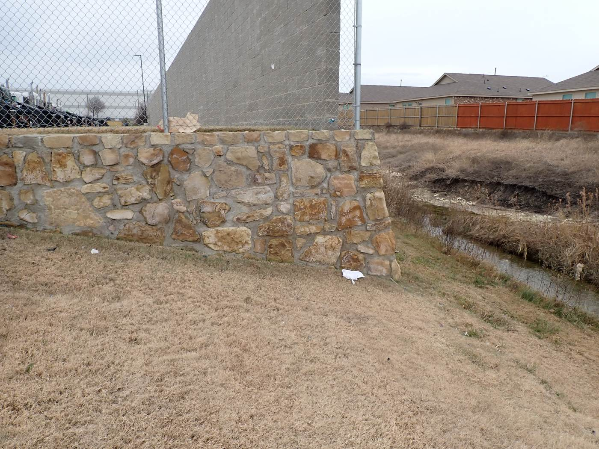
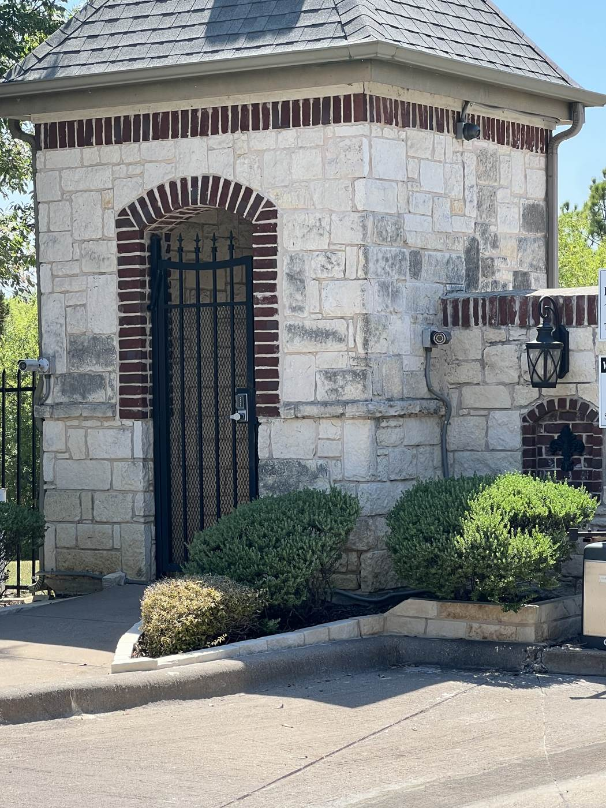
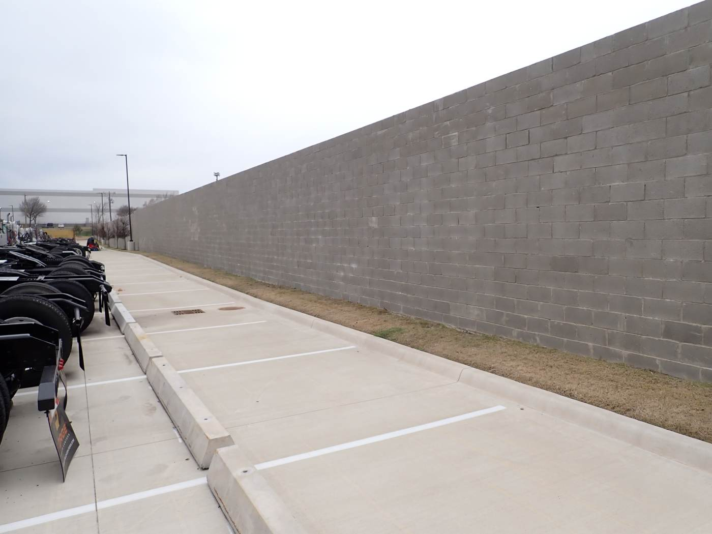
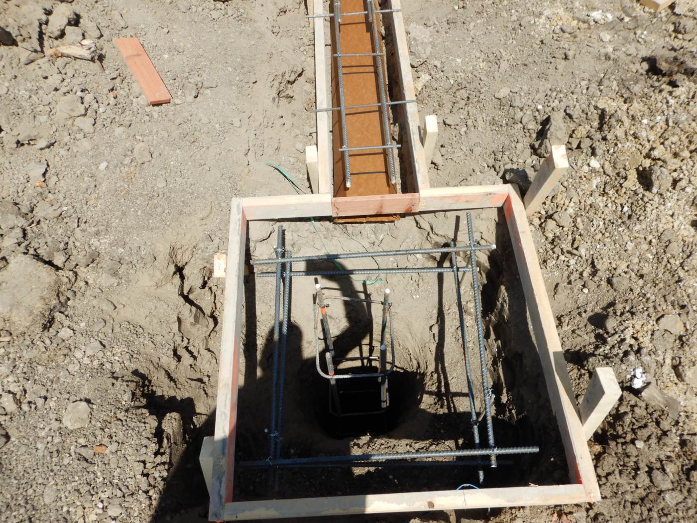
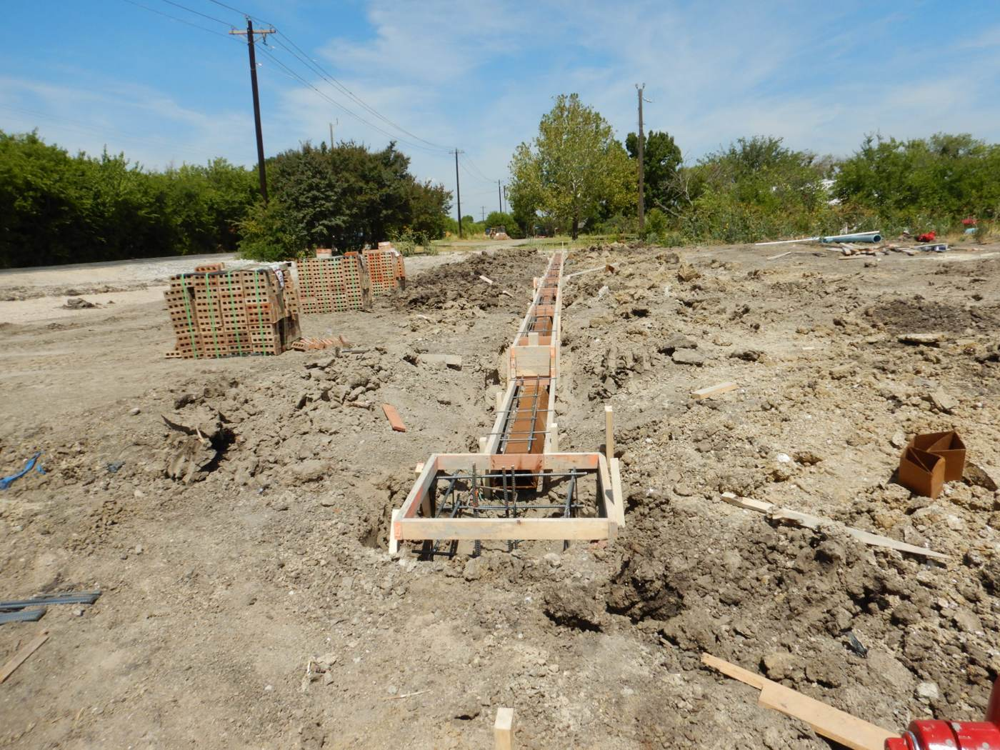

Gravity, segmental and concrete walls
- Masonry and stone gravity walls
- Segmental block with geogrid
- Cantilevered concrete walls
- Gabion and shotcrete walls
Out of Aledo, working all over Texas
DirtSavers engineers retaining walls, screen walls, entry monuments and shade structures for contractors, builders and developers across Texas. Sealed plans for permit, and inspections during construction.

STONE VENEER RET. WALL, TYP.Yes, that's Mike. No, the wall didn't move. (AI-generated, for fun.)
Mike after mule deer in the high desert. Watch the scope. (AI-generated, for fun.)
Mike checking the footing on an ocean pyramid. Still standing. (AI-generated, for fun.)
Sealed engineering for the walls and structures that go in after the dirt work. Take one apart in 3D
Perimeter, thoroughfare and property line screen walls, with the piers, columns and foundations under them.
Screen wall design →Community entries, logo columns, sign walls and overhead features, with sealed drawings for permit.
Monument design →Foundations for manufactured shade structures, and custom steel and timber pavilions and cabanas.
Shade structure design →Inspections of piers, footings and wall installation, with a written report for the job file.
Field observation →A check of the slope, the wall and the soil together, for tall walls, tiered walls and walls on slopes or next to water.
Global stability →We stay with our designs through construction. See the project list →





Four steps from plans to a finished wall.
Grading plan, landscape or hardscape plan, and the geotechnical report if there is one.
We engineer the walls, monuments or structures shown on your plans.
You receive a P.E. sealed plan set ready for city or owner review.
Inspections during construction, with a written report for the job file.
The site or grading plan, the landscape or hardscape plan, and the geotechnical report if there is one. Email them to plans@dirtsavers.com or use the upload link on the contact page.
Yes. We are based in Aledo and design projects across Texas, including Central Texas and the Austin and San Marcos area.
Yes. We inspect piers, footings and wall installation during construction and provide a written report for the job file.
Yes. We investigate existing walls and provide repair recommendations.